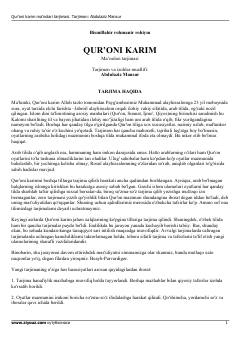

QKQur'oni Karimning o'zbek tilidagi to'liq ma'nolar tarjimasi.
Bu kitob Qur'oni Karimning o'zbek tilidagi ma'nolar tarjimasi bo'lib, tarjimon va izohlar muallifi Abdulaziz Mansurdir. Tarjima hanafiylik mazhabiga muvofiq tayyorlangan, oyatlar mazmuni imkon qadar so'zma-so'z ifodalangan va murakkab oyatlarga sahifa ostida izohlar berilgan. Kitob o'zbek kitobxonlariga Qur'on ma'nolarini ona tilida tushunishga yordam berish maqsadida yaratilgan.